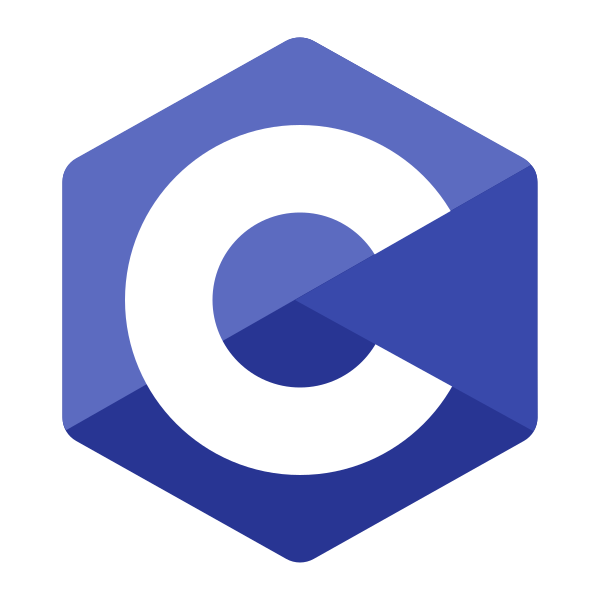

Sobre Mim
Sou um Técnico em Informática
Olá! Eu sou Matheus Rossini, tenho 18 anos e sou apaixonado por tecnologia e programação. Recentemente, concluí meu curso de Informática pela Escola Técnica Estadual Monteiro Lobato, onde desenvolvi habilidades em programação (C, Java e Python), criação de sites (HTML, CSS, JavaScript e Flask), modelagem de banco de dados com consultas SQL, sistemas operacionais e redes de computadores. Esse aprendizado me ajudou a construir uma base sólida para atuar na área de Tecnologia da Informação. Sou uma pessoa calma, proativa e dedicada, sempre em busca de aprendizado contínuo. Estou em busca de um estágio para contribuir em projetos desafiadores e crescer profissionalmente. Valorizo o trabalho em equipe e a troca de conhecimento.
Skills
- Programação:
-  C
 Java
Java  Python
Python
- Criação de sites:
 HTML
HTML  CSS
CSS  JavaScript
JavaScript  Node.js
Node.js  Flask
Flask
- Banco de dados:
 MongoDB
MongoDB - MySQL